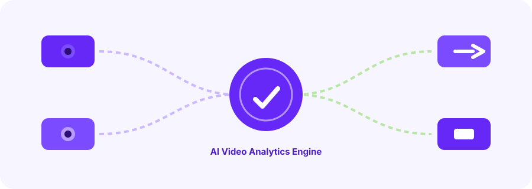

AI Video Analytics
AI-Based Video Analytics
Transforming Surveillance into Real-Time Intelligence
Turning passive surveillance into actionable intelligence. Traditional CCTV systems are fundamentally reactive — recording footage that can only be reviewed after incidents occur. Our AI-powered video analytics transforms surveillance into a proactive, intelligent, and fast security solution. Use existing cameras without requiring a complete system replacement.
Surveillance Is Evolving
From Reactive Footage to Proactive Intelligence
The same cameras. A completely different security posture.
Traditional CCTV
Reactive Surveillance
AI Video Analytics
Proactive Intelligence
Video Analytics Capabilities
Intelligence From Every Frame
Capability 01
Facial Recognition
Identify or verify individuals in real-time.
- Detects faces even in crowds or low-light environments.
- Compares against customizable databases such as employees, VIPs and watchlists.
- Triggers real-time alerts on unauthorized or unknown persons.
- Tracks attendance or entry/exit logs automatically.
Capability 02
PPE Detection
Ensure workplace safety compliance with instant alerts — immediate notifications when PPE violations are detected in hazardous zones.
Capability 03
Vehicle Counting
Monitor traffic flow, parking usage, and congestion at your sites.
- Smart city planning, parking optimization and traffic management.
Capability 04
Drowsiness Detection
Prevent fatigue-related incidents before they happen. The AI monitors:
- Eye closure duration and blink patterns
- Yawning frequency and mouth movements
- Head position changes and nodding
- Facial muscle relaxation indicators
Capability 05
People Counting
Understand human movement and crowd density. Real-Time Counting tracks people entering, exiting, or moving through designated zones.
Zone Density · Live
- Data Applications: facility planning, staff allocation, queue management, conversion rate analysis.
- Safety Monitoring: automatic alerts for over-capacity situations or abnormal crowd formations.
Capability 06
Object Detection
Recognize and classify objects in a scene — from thousands of different object types to real-time inventory monitoring and immediate threat alerts.
SECURITY
- Weapons
- Abandoned bags
- Suspicious packages
RETAIL
- Shopping carts
- Merchandise
- Product displays
INDUSTRIAL
- Tools
- Equipment
- Inventory
- Safety barriers
Capability 07
Animal Detection & Classification
Monitor and manage animal presence in key zones.
- Identifies various animals with high accuracy, including dogs and cats.
- Classifies species and distinguishes between animals.
- Tracks movement patterns and logs frequency of appearances.
Capability 08
Unauthorized Access Detection
Secure restricted or sensitive zones with a layered verification workflow.
Zone Definition
Create virtual boundaries around sensitive areas with customizable parameters.
Movement Detection
Instantly identify human presence within restricted zones.
Identity Verification
Cross-reference with facial recognition to determine authorization status.
Alert Dispatch
Send real-time notifications to security teams through multiple channels.
System Intelligence
One Intelligent Security Layer

Why IN4 Video Analytics
Intelligence That Never Sleeps
Each feature automates what humans do manually — but with greater speed, consistency, and reliability across 24/7 operations. Our comprehensive solution enhances safety, efficiency, and situational awareness across your entire organization. All analytics integrate with existing camera systems, making deployment fast and cost-effective with minimal disruption.
Next Steps
Transform Your Surveillance Today
Free Consultation
Schedule a no-obligation assessment of your current surveillance infrastructure.
Custom Solution Design
Receive a tailored implementation plan based on your specific security needs.
Seamless Implementation
Experience minimal disruption with our proven integration methodology.
Ongoing Support
Benefit from continuous updates, training, and technical assistance.
Book a demo
Request an AI Video Analytics Demo
Tell us about your camera setup and we'll show you how your existing surveillance becomes real-time intelligence.